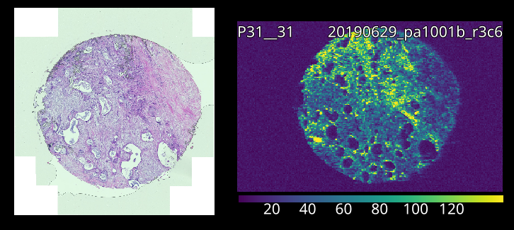
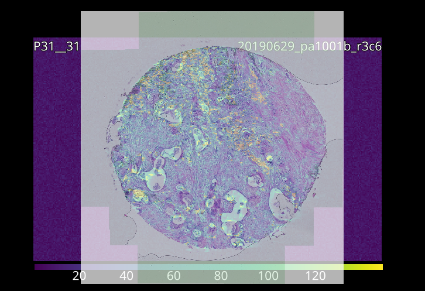
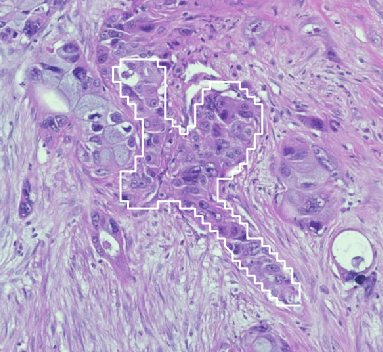

7. Example: Selecting ROIs from an Image
Data selection can be guided by loading an image into pew², most image formats are supported.
pew² implements two different tools for manual region selection, the Rectangle Selector and Lasso Selector. These tools function similarly to selection tools in other programs, with regions selected by clicking and dragging on the image.
Holding Shift will add to the currently selected region while holding Ctrl will subtract from it.
{kind=link}

A loaded laser and overlay image.
- Load a laser and image file.
Both types of image can be loaded using drag-and-drop or the Import Wizard.
{kind=link}

Aligned images.
- Align the images manually.
Overlay image scale can be set via the Pixel Size in the image context menu, or by using the affine or scale-rotate controls.
{kind=link}

Locking images allows selection through them.
- Select region using the selection tools.
Lock the overlay image to prevent interaction. See Basic Usage for details on selection tools.